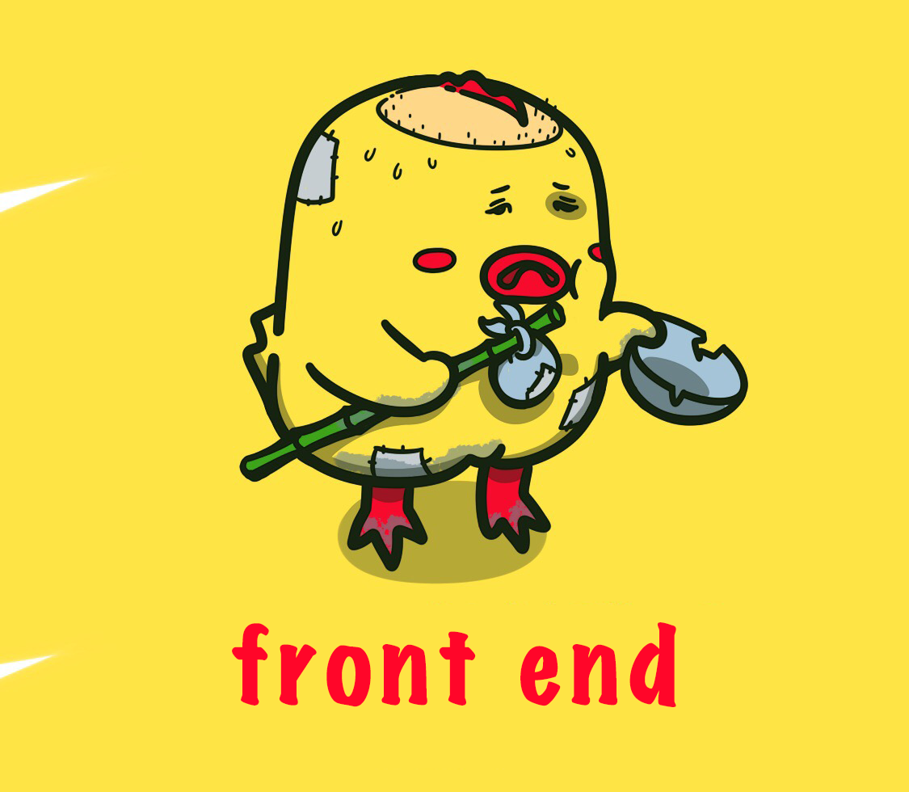

<!DOCTYPE html>
<html lang="en">
<head>
  <meta charset="UTF-8">
  <meta name="viewport" content="width=device-width, initial-scale=1.0">
  <title>纯js的模板引擎 demo</title>
  <link rel="stylesheet" href="./style.css">
</head>
<body>
  <div id='prejs-template-demo-container'></div>

  <script id='template-container' type='text/html'>
    <div class='demo-container-img'>
      
      <text class='img-desc'><%=this.name%></text>
    </div>
  </script>
  <!-- 当前页面引入一个js文件，js文件里面导入 umd 格式的包文件，需要先将 require 包引入，代码如下 -->
  <!-- <script src='./requirejs/require.js'></script>
  <script src="./index.js"></script> -->
  <!-- 所有代码在页面上直接使用 umd 格式的包，代码如下 -->
  <script src='../dist/index.js'></script>
  <script>
    // 获取代码片段
    const templateStr = document.getElementById('template-container').innerHTML
    // 解析代码片段中的变量并赋值
    const afterTheParserHtml = purejsTemplateParser(templateStr, {
      name: 'fonrend current situation...'
    })
    // 解析后的代码片段插入dom结构
    document.getElementById('prejs-template-demo-container').innerHTML = afterTheParserHtml
  </script>
</body>
</html>